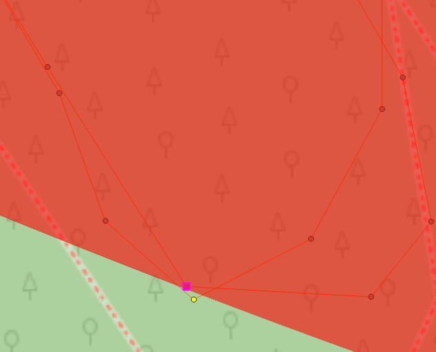

Работа выполнялась в QGIS с использованием инструмента «Temporal Controller Panel». Была взята проекция EPSG: 2528.
Сперва при помощи линейки была измерена длина круга. За точку отсчёта для первого круга была взята 95 точка трека со временем 14:09:03. За точку отсчёта для второго круга была взята 395 точка со временем 14:36:03. За точку окончания второго круга взята 689 точка трека со временем 15:02:35. Таким образом, время прохождения первого круга составило 27 минут, второго – 26 минут 32 секунды (≈ 26,53 минуты).
Вычисление средней скорости прохождения круга:
(4496,66 + 4514,11) / (27+26,53) ≈ 168,33 м/мин ≈ 10,1 км/ч
Точка максимального удаления от базы была определена при помощи построения круглого полигона по точкам из центра (юго-западный угол спортивного клуба) к краю по радиусу поверх (наложением) трека (рис. 1). Таковой оказалась 565 точка трека. Расстояние от центра круга составило 719,7 м
| Длина круга (первого и второго) | Средняя скорость прохождения круга | Время начала круга (первого и второго) | Время окончания круга (первого и второго) | Неравномерность перемещения | Максимальное удаление от базы |
|---|---|---|---|---|---|
4496,66 м 4514,11 м |
10,1 км/ч | 14:09:03 14:36:03 |
14:36:03 15:02:35 |
Второй круг был пройден быстрее первого | 719,7 м |
Движение по маршруту осуществлялось с примерно одной скоростью, что наглядно видно во время использования инструмента «Temporal Controller Panel». Но, видимо, происходило небольшое её снижение на поворотах. Второй круг был пройден немного быстрее первого.

Рисунок 1. Определение наиболее удалённой точки